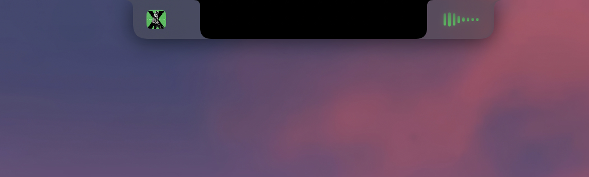

01 — Now Playing
The music, where your eyes already are.
While Apple Music plays, the notch grows small ears — album artwork on the left, a soundwave on the right, tinted to the current cover. The default wave is a real equalizer: Glint taps Music's output and runs an FFT, so bass thumps the left bars and vocals ripple the right ones.
- FFT process tap
- artwork-tinted
- pauses & lingers